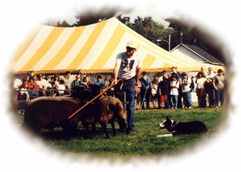

Continued from Athletic page
He believes it is very important for Border Collies to utilize their natural herding instinct by working on a farm. Consequently, Kennard will only place his puppies and trained dogs in working situations. He does not recommend Border Collies be placed as pets, because their strong instincts need to be constructively challenged.
Kennard has used only Border Collies for his herding needs, as he feels they have the keenest instincts and have been bred specifically to cultivate their herding abilities. He has been called on to do many tasks with his Border Collies such as locating and rounding up escaped animals and sorting and moving animals to new pastures for other farmers. He has also been hired to do animal wrangling on movie sets.
Kennard invites you to come watch his demonstration, learn about Border Collies, and meet and play with his dogs.